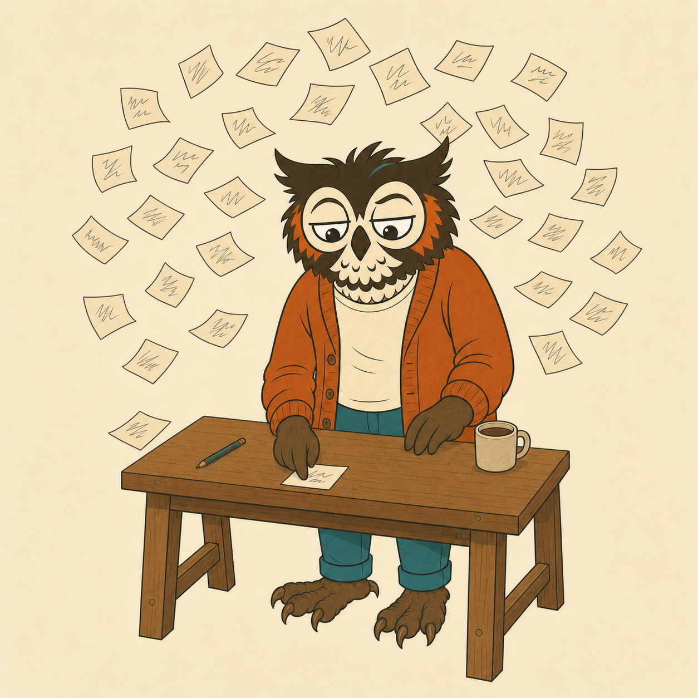

scatterbrain
Give your Zo Computer a deliberate case of ADHD.
Five isolated sessions think in parallel under distorted cognitive frames. Then one cold-blooded critic scores everything and flags the traps.
The problem
Ask for 20 ideas, get one idea wearing 20 hats.
The first three answers to any open question are the answers a competent person gives in thirty seconds. Correct, safe, forgettable. The ideas worth paying for live past number three, and a single line of thinking never reaches them, because it anchors on whatever it said first.
Every idea in a brainstorm list can see the ideas above it. Idea 14 is a remix of ideas 1 through 13. That is not a prompt problem. It is an architecture problem.
The mechanism
Scatter, then hyperfocus. The two phases never mix.
Strip the anchors
A first pass rewrites the question down to the actual job to be done, minus the assumptions smuggled in with it.
Five sessions, zero shared context
Each child session thinks under one distorted frame. They run in parallel and never see each other, so they physically cannot anchor.
One cold scoring pass
A separate session, forbidden to invent anything, scores every idea, clusters by angle, and flags the pretty-but-doomed ones as traps with a one-line reason each.
Top survivors get built out
The best three come back as a sketch: how it works, the load-bearing risk, and the first concrete step.
[scatterbrain] run plan: 5 frames x 6 ideas, 3 deepened -> about 10 child sessions [scatterbrain] reframe: stripping incidental anchors [scatterbrain] scatter: 5 frames -> saboteur, street-vendor, mycologist, coroner, lockpicker [scatterbrain] hyperfocus: critic scoring 28 ideas [scatterbrain] hyperfocus: deepening top 3
The scoring
Legs weighted heaviest, because a brilliant unshippable idea is a trap with good lighting.
The proof run
First job: name itself. It rejected four of its own six candidates.
The very first real run pointed scatterbrain at its own naming. The critic flagged four of the six candidates as traps, each with a reason. One rejection, verbatim:
“It celebrates the scatter while erasing the critic pass, which is the half that makes the skill defensible.” the critic session, on a rejected name
The frames
Not costumes. Forcing functions.
Each branch gets exactly one deliberately distorted vantage point, with physics. Under the saboteur frame the textbook answer is unreachable, which is the point. Fourteen frames ship in the catalog; every run gets at least one feral one.
Install
One line. Then say “scatterbrain this.”
Runs on Zo Computer, which can spawn the isolated child sessions the method needs. Fair warning: a default run is about 10 child sessions, so the skill gates itself and refuses to fire on questions with one right answer.
git clone https://github.com/The-Little-AI-Company/scatterbrain.git /home/workspace/Skills/scatterbrain
Questions
The parts people ask about.
What is scatterbrain?
Scatterbrain is an open-source skill for Zo Computer that splits an open-ended question across five isolated parallel AI sessions, each thinking under a deliberately distorted cognitive frame, then runs a separate critic session that scores every idea and flags the ones that look good but are traps. MIT licensed, built by The Little AI Company.
Why not just ask one AI session to brainstorm 20 ideas?
Because the ideas share one context window. Every idea in the list can see the ideas above it, so idea 14 is anchored on ideas 1 through 13 and you get one idea wearing 20 hats. Scatterbrain removes the anchoring by architecture, not prompting: the five generating sessions run with zero shared context and physically cannot see each other's output.
What are cognitive frames?
Each branch thinks as someone with different physics: a night freight dispatcher, a salvage mechanic who cannot buy new parts, a person paid to sabotage the obvious solution, a mycologist. A frame is not a costume. It bans the default answer, which forces the branch to reach ideas a straight brainstorm never touches. The catalog ships with 14 frames and a guide for writing new ones.
How does the critic decide what survives?
A separate session, forbidden to invent ideas of its own, scores every idea on spark (distance from the obvious default, 0.35), legs (could it actually run, 0.40), and aim (does it hit the stated problem, 0.25). Legs is weighted heaviest because a brilliant unshippable idea is a trap with good lighting. Traps get flagged with a one-line reason, and the top three survivors get deepened into a sketch, the load-bearing risk, and a first step.
What does a run cost?
About 10 child sessions at default settings (5 frames, 3 deepened), scalable down with flags. Because of that cost the skill gates itself: closed questions, low stakes, or "quick" phrasing and it refuses to fire and just answers normally.
Does it work outside Zo Computer?
The engine is Zo-only, because it needs a platform that can spawn isolated child sessions over an API. The method ports anywhere that can do that: isolated parallel generators, one separate critic, trap detection. The SKILL.md and frame catalog are readable on their own. Scatterbrain is a ground-up rebuild of the ADHD skill for Claude Code by Udit Akhouri, MIT, credited in the repo.